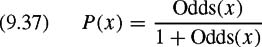
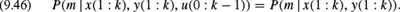

|
| |||||||||||||
|
|
||
In chapter 8 we learned how to use a Kalman filter for acquiring a map of the environment. The assumption there was that the robot can identify landmarks in the environment and that the posterior about the location of the robot and the landmarks can be represented by a Gaussian distribution. In this section we consider probabilistic forms of mapping that-similarly to probabilistic localization-allow representation of arbitrary posteriors about the state of the environment and the location of the robot during mapping.
To map an environment, a robot has to cope with two types of sensor noise: noise in perception (e.g., range measurements), and noise in odometry (e.g., wheel encoders). Because of the latter, the problem of mapping creates an inherent localization problem. The mobile robot mapping problem is therefore often referred to as the concurrent mapping and localization problem (CML) [277], or as the simultaneous localization and mapping problem [99,128] (see also chapter 8). As in chapter 8 we will use the acronym SLAM when referring to the latter. In fact, errors in odometry render the errors of individual features in the map dependent even if the measurement noise is independent, which suggests that SLAM is a high-dimensional statistical estimation problem, often with tens of thousands of dimensions. In this chapter we approach this problem in two steps. First we concentrate on the question of how to build maps given the location of the robot is known. Afterward we relax this assumption and describe a recently developed technique for SLAM.
A very popular, probabilistic approach to represent the environment is the so-called occupancy probability grid pioneered by Elfes and Moravec in the 80s [325]. Occupancy probability grids are approximative. Each cell ml of such a two-dimensional grid m stores the probability P(ml | x(1: k), y(1: k)) that the place in the environment corresponding to ml is occupied given the observations y(1: k) = y(1),...,y(k) and all locations of the robot x(1: k) = x(1),...,x(k) at the corresponding points in time. Because of their probabilistic nature, occupancy probability grids can be updated easily based on sensory input.
Occupancy probability grids seek to find the map m that maximizes P(m | x(1: k), y(1: k)). If we apply Bayes rule using x(1: k) and y(1: k ? 1) as background knowledge, we obtain
| (9.26) |
|
If we assume that y(k) is independent from x(1 : k ? 1) and y(1 : k ? 1) given we know m, then the right side of this equation can be simplified to
We now again apply Bayes rule to determine
If we insert (9.28) into (9.27) and since x(k) does not carry any information about m if there is no observation y(k), we obtain
If we exploit the fact that each ml is a binary variable, we derive the following equation for the posterior probability that all cells of m are free in an analogous way.
where m denotes the complement of m. By dividing (9.29) by (9.30), we obtain
| (9.31) |
|
Finally, we use the fact that P(A) = 1 ? P(A) and obtain the following equation:
If we define
(9.32) turns into
The corresponding log Odds representation of (9.34) is
Please note that this equation also has a recursive structure similar to that of the recursive Bayesian filtering scheme described in Section 9.1. To incorporate a new scan into a given map we multiply its Odds ratio with the Odds ratio of a local map constructed from the most recent scan and divide it by the Odds ratio of the prior. Often it is assumed that the prior probability of m is 0.5. In this case the prior can be canceled so that (9.35) simplifies to
| (9.36) |
|
To recover the occupancy probability from the Odds representation given in (9.34), we use the following law which can easily be derived from (9.33).
| (9.37) | 
|
| (9.38) |
|
This leads to
Algorithm 19 uses the recursive nature of (9.39) to compute the posterior P(m | x(1 : k), y(1 : k)). It receives as input the sequence of measurements y(1 : k) and the corresponding locations of the robot x(1 : k), as well as the initial probability P0(m) about the occupancy probability of the cells in the map. Typically, P0(m) will be initialized with the prior probability P(m). If one wants to apply Algorithm 19 to multiple sequences of measurements, P0(m) can also be initialized with the output obtained from the previous application of the algorithm.
It remains to describe how we actually compute P(m | x(k), y(k)). Several techniques for determining this quantity have been presented. Whereas Moravec and Elfes [144, 325] used a probabilistic model to compute this quantity for ultrasound measurements, Thrun [411] applied a neural network to learn the appropriate interpretation of the measurements obtained with sonar sensors. The map depicted in the right image of figure 5.1 in chapter 5 has been computed with Thrun's approach. In this chapter we present a model that can be regarded as an approximate version of the approach described by Elfes [144].
One key assumption of occupancy probability grid-mapping techniques is that the individual cells of the map m can be considered independently. Accordingly, the posterior probability of m is computed as
| (9.40) |
|
The advantage of this approach is that it suffices to describe how to update a single cell upon sensory input. Given this assumption, all we need to specify is the quantity P(ml | x(k), y(k)) which is the probability that cell ml is occupied given the measurement y(k) and the state x(k) of the robot.
The model P(ml | x(k), y(k)) described here considers for each cell ml the difference between the measured distance y(k) and distance of ml from x(k). In the case of ultrasound sensors the signal is typically emitted in a cone. To compute the occupancy probability of a cell ml we therefore also consider the angle ? between the optical axis of the sensor and the ray going through ml and x(k) (see figure 9.12). The occupancy probability P(ml | x(k), y(k)) = P(md, ?(x(k)) | y(k), x(k)) of ml is then computed using the following function, which can be regarded as an approximation of the mixture of Gaussians and linear functions applied by Elfes [144].
In this definition s(y(k), ?) is a function that computes the deviation of the occupancy probability from the prior occupancy probability P(m) given the measured distance y(k) and the angle ? between the cell, the sensor, and its optical axis. A common choice for s(y(k), ?) is a product of a linear function g(y(k)) and a Gaussian :
| (9.42) |
|
figure 9.13 plots these two components as they are used in the examples shown in this section. The variance ?? of the Gaussian is 0.05. Figure 9.14 plots s(y(k), ?) for y(k) ? [0; 3m] and . This angular range is identical to the opening angle of 15 degrees of the ultrasound sensors used to acquire the data of the examples presented here.
The constants d1, d2, and d3 in (9.41) specify the interval in which the different linear functions of the piecewise linear approximation are valid (see also figure 9.15). The occupancy probability of cells lying between x(k) and the arc from which the signal was reflected must be smaller than the prior probability for occupancy. In our model the occupancy probability of cells with d < y(k) ?d1 therefore is computed as P(ml)?s(y(k), ?). The occupancy probability of cells whose distance to x(k) is close to y(k), i.e., for which y(k) ? d1 ? d < y(k) + d1, is computed by a linear function that increases with d.Ifa beam ends in a cell it is commonly assumed that the world is also occupied at least for a certain range behind that cell. In our model the occupancy probability therefore stays at a high but constant level P(ml) + s(y(k), ?) for all cells whose distance lies between y(k) + d1 and y(k) + d2. Accordingly, the constants d1 and d2 encode the average depth of obstacles. For distances d with y(k) + d2 ? d < y(k) + d3, we assume that the occupancy probability linearly decreases to the prior occupancy probability P(ml). Finally, for cells ml = md, ?(x(k)) whose distance from x(k) exceeds y(k) + d3 we can safely assume that P(md, ?(x(k)) | y(k), x(k)) equals the prior probability P(ml), since y(k) does not give us any information about such cells. Figure 9.15 plots P(md, ?(x(k)) | y(k), x(k)) for d ranging from 0 m to 3 m given that y(k) is 2 m and that ? is 0 degrees. In this case, the value of s(y(k), ?) is approximately 0.16. We additionally assume that the prior probability P(ml) = P(md, ?(x(k))) = 0.5 for all d, ?, and x(k).
Figure 9.16 shows three-dimensional plots of the resulting occupancy probabilities for measurements of 2.0 m and 2.5 m. In both plots the optical axis of the sensor cone is identical to the x-axis and the sensor is located in the origin of the coordinate frame. As can be seen from the figure, the occupancy probability is high for cells whose distance to x(k) is close to y(k). It decreases for cells with distance y(k) from x(k) and with increasing values of ?. Furthermore, it stays constant for cells that are immediately behind a cell that might have reflected the beam and linearly decreases to the prior probability afterward. For cells that are covered by the beam but did not reflect it, the occupancy probability is decreased.
Figure 9.17 shows our sensor model in action for a sequence of measurements recorded with a B21r robot in a corridor environment. The upper-left corner shows a map that has been built from a sequence of ultrasound scans. Afterward the robot perceived a series of eighteen ultrasound scans each consisting of 24 measurements. The occupancy probabilities for these eighteen scans are depicted in the three columns in the center of this figure. Note that during mapping we did not use measurements whose distance exceeded 2.5m. The occupancy probability grid obtained by integrating the individual observations into the initial map is shown in the lower-right corner of this figure. As can be seen, the belief converges to an accurate representation of the corridor structure although the individual measurements show a high amount of uncertainty, as is usually the case for ultrasound sensors.
The left image of figure 9.18 shows the occupancy probabilities of the corridor environment obtained after incorporating all measurements of the data set used here. The map represents a 17 m long and 11 m wide part of a corridor environment including three rooms. The right image shows the corresponding maximum-likelihood map. This map is obtained from the occupancy probability grid by a simple clipping operation with a threshold of 0.5. The gray areas of the maximum-likelihood map correspond to cells that have not been sensed by the robot.
Let us briefly discuss some aspects that might be relevant to potential improvements of the models described here. The strongest restriction results from the assumption that all cells of the grid are considered independently. This independence assumption decomposes the high-dimensional state estimation problem into a set of onedimensional estimation problems. The independency of individual cells, however, is usually not justified in practice. For example, if the robot detects a door, then particular cells in the neighborhood need to be upd ted according to the specific shape of the door. Accordingly, techniques considering the individual cells of a grid independently might produce suboptimal solutions. One technique that addresses this problem has recently been presented by Thrun [413].
Additionally, occupancy probability grid maps assume that the environment has a binary structure, i.e., that every cell is either occupied or free. Occupancy probabilities cannot correctly represent situations in which a cell is only partly covered by an obstacle. Finally, most of the techniques, as well as our model, assume that the individual beams of the sensors can be considered independently when updating a map. This assumption also is not justified in practice, since neighboring beams of a scan often yield similar values. Accordingly, a robot ignoring this might become overly confident of the state of the environment.
In the previous subsection, we assumed that the robot always knows its position while it is mapping the environment. This assumption, however, is typically not justified, especially when a robot has to rely on its onboard sensors to determine its position due to the lack of a global positioning system, active beacons, or predefined landmarks. In such a situation, mapping turns into the so-called chicken and egg problem. Without a map the robot cannot determine its own position and without knowledge about its own position the robot cannot compute what its environment looks like. This is why this problem is often denoted as the SLAM problem (see also chapter 8).
In the past, research in the area of SLAM has led to two different types of approaches, each of which has its advantages and disadvantages [412]. The first class contains algorithms relying on the EKF to estimate joint posteriors over maps and robot locations [100,128,277]. These approaches provide a sound mathematical framework (see also chapter 8). However, they mainly have been applied in situations in which the environment contains predefined landmarks.
The second class of techniques considers the SLAM problem as a global optimization problem. For example, Lu and Milios [299] consider robot locations as random variables and derive constraints between locations from distances between overlapping range measurements and from odometry measurements. The constraints can be regarded as links in a network of springs, whose energy is to be minimized. Other approaches apply Dempster, Laird and Rubin's expectation maximization, or EM algorithm[127] to compute the maximum-likelihood estimate for the map and the locations of the robot. Examples of these kind of techniques can be found in [84,126,382,417]. EM-based techniques have been applied successfully to mapping large cyclic environments with highly ambiguous features. However, they are inherently batch algorithms, requiring multiple passes through the entire data set. As a consequence, they usually cannot be applied when a robot has to map its environment online, i.e., while it is exploring it.
In probabilistic terms the problem of SLAM is to find the map and the robot positions which yield the best interpretation of the data gathered by the robot. As in Section 9.1 the data consist of a stream of odometry measurements u(0 : k ? 1) and perceptions of the environment y(1 : k). According to Thrun [412], the mapping problem can be phrased as recursive Bayesian filtering for estimating the robot positions along with a map of the environment:
As in probabilistic localization (see Section 9.1) we assume that the odometry measurements are governed by a so-called probabilistic motion model P(x(k) | x(k ? 1), u(k ? 1)) which specifies the likelihood that the robot is at x(k) given that it previously was at x(k ? 1) and the motion u(k ? 1) was measured. On the other hand, the observations follow the sensor model P(y(k) | x(k), m), which defines for every possible location x(k) in the environment the likelihood of the observation y(k) given the map m.
Unfortunately, estimating the full posterior in (9.43) is not tractable in general. One approach is to apply incremental scan matching [180, 182, 365, 424]. The general idea of such approaches can be summarized as follows. At any point k ? 1 in time, the robot is given an estimate of its location  and a map . After moving and taking a new measurement y(k), the robot determines the most likely new location such that
and a map . After moving and taking a new measurement y(k), the robot determines the most likely new location such that
It does this by trading off the consistency of the measurement with the map [first term on the right-hand side in (9.44)] and the consistency of the new location with the control action and the previous location [second term on the right-hand side in (9.44)]. The map is then extended by the new measurement y(k), using the location as the location at which this measurement was taken. Popular techniques to determine in the context of laser range scans are the iterative-closest-point algorithm [46] or variants thereof.
The key limitation of scan-matching approaches lies in the greedy maximization step. Once the location x(k) at time k has been computed it is not revised afterward so that the robot cannot recover from registration errors. Although scan matching techniques have been proven to be able to correct enormous errors in odometry, the resulting maps often are globally inconsistent. As an example consider figure 9.19 which shows a map generated from raw odometry and laser range data obtained with a B21r robot. As can be seen from the figure, the robot suffers from serious errors in odometry so that the resulting map is useless without any correction. The size of this environment is 28 m נ28 m. When recording the data the robot traveled 491 m with an average speed of 0.19 m/s. Figure 9.20 shows the map created with the scan matching system presented by H䨮el, Schulz, and Burgard [182]. Although the local structures of the map appear to be very accurate, the map is globally inconsistent. For example, many structures like walls, doors, and such can be found several times and with a small offset between them.
To overcome this problem, alternative approaches have been developed. The key idea of these techniques is to maintain a posterior about the position of the vehicle. Whereas Gutmann and Konolige [178] used a discrete and grid-based approximation of the belief about the robots location, Thrun [412] applied a particle filter for this purpose. However, both approaches only maintain a single map and revise previous decisions whenever the robot closes a loop and returns to a previously visited place.
More recently, Murphy and coworkers [137,329] have proposed Rao-Blackwellized particle filtering as an efficient means to maintain multiple hypotheses during mapping. The key idea of this approach can be understood more easily when one considers the graphical model depicted in figure 9.21. If we know the map, the overall problem is transformed into a localization problem where the task is to estimate the location of the robot at each point in time. If, however, the locations are known, it remains solely to compute the map. Note that the knowledge of x(1 : k) is sufficient to figure out what the environment looks like, whereas x(0) only determines the location of the map. Thus, if x(1 : k) is known but x(0) is unknown, the robot can estimate its position relative to the map, but it cannot determine the location of the map.
The application of Rao-Blackwellized particle filtering to mapping is motivated by the observation that once the path x(1 : k) of the robot is known, the maximum-likelihood map can be computed analytically, e.g., using the method described in subsection 9.2.1. Therefore, the goal of SLAM with Rao-Blackwellized particle filters is to estimate the path of the robot using a particle filter and to analytically compute the map corresponding to that path. In practice this means that we use a set of particles to represent a posterior about potential paths of the robot. To each of these paths we associate an individual map that is computed based on the hypothesis that this path corresponds to the true path of the robot. The importance weight of a sample is proportional to the likelihood of the most recent observation given the map, which is computed based on the previous observations and the path of the robot according to that particular particle.
Note that Rao-Blackwellized particle filtering [136,137] is a general technique to reduce the size of high-dimensional state estimation problems by marginalizing out parts of the state space. In this section we use this technique to develop an efficient solution to the SLAM problem.
Let us again consider the posterior P(x(1 : k), m | u(0 : k ? 1), y(1 : k)) we want to estimate. If we apply the chain rule of probability theory, we obtain
| (9.45) |
|
Obviously, we can safely assume that m is independent of u(0 : k ? 1) once we know the locations x(1 : k) of the robot, i.e.,
| (9.46) | 
|
This leads to
| (9.47) |
|
In the previous section we saw that we can efficiently compute the posterior P(m | x(1 : k), y(1 : k)) for m given we know x(1 : k) and y(1 : k). Thus, all we need to do is to sample P(x(1 : k) | y(1 : k), u(0 : k ? 1)) using a particle filter and compute for each particle the map that is associated to it.
We proceed as follows. Suppose is a set of particles that represents the posterior about potential paths of the robot. In the beginning we assume that each particle starts at [0, 0, 0]T, i.e., the robot is located at the origin of the coordinate system and its heading is 0. Let us furthermore denote the path associated with the jth particle by h(j)(1 : k). As described above, once the path of the robot is known, we can directly compute the most likely map for that particle:
| (9.48) |
|
Whenever an odometry measurement u(i ? 1) is obtained, we proceed in the same way as we do in probabilistic localization. For each sample we compute the next location x = x?j of its path by sampling from P(x | xj, u(i ? 1)). Note that-as in probabilistic localization-we in principle had to sample from P(x | xj, u(i ? 1), m(j)(1 : k ? 1)), i.e., we also had to consider the map m(j) (1 : k ? 1) associated with each sample. In practice, however, the map is often ignored for reasons of efficiency since computing P(x | xj, u(i ? 1), m(j)(1 : k ? 1)) typically involves a time-consuming ray-casting operation in m(j)(1 : k ? 1). Once we have computed for the jth particle both the map m(j)(1 : k ? 1) and the new location x?j, we are ready to compute the likelihood of the observation y(k) and to use the resulting quantity as an importance weight during the resampling step. As a sensor model we can, e.g., choose the model described in section 9.1. The overall approach is realized by algorithm 20. Note that, according to the recursive structure of the problem, this algorithm can easily be extended for multiple sequences of sensory input. To do so, one simply has to ensure that the initialization is carried out using the output obtained from the previous application of the algorithm.
Please note that two aspects of this algorithm need to be implemented carefully to obtain the desired efficiency and convergence. If the map m(j)(1 : k ? 1) is computed from scratch in every round, the resulting algorithm will be quadratic in k. On the other hand, maintaining a complete map for each individual particle (which also needs to be updated in each round) is inefficient with respect to memory. Additionally, it involves a time-consuming operation if the map associated with a sample has to be copied once for each of its successors in the resampling step. A popular approach to overcome this problem is to use treelike structures such as those proposed by Montemerlo et al [321], as well as by Parr and Eliazar [346]. Since typically many of the particles have larger parts of their history in common, the maps associated with the particles can efficiently be represented using trees.
An alternative although approximative approach to compute the maps associated with the individual samples is based on the observation that, in order to compute P(y(k) | xj, m(j)(1 : k ? 1)), we only need to determine the part of the map m(j)(1 : k ? 1) that is covered by y(k). If we furthermore use only a limited number of measurements from the history h(j)(1 : k) we obtain an approximation of m(j) (1 : k ? 1) that, if, additionally, spatial indices are used to compute the set of relevant scans from h(j)(1 : k), can be computed in constant time. Thus, the overall complexity is constant for each particle. This approach has been successfully applied by H䨮el, Burgard, Fox, and Thrun [181] and has been used for the examples presented here.
Input: Sequence of measurements y(1 : k) and movements u(0 : k - 1) and set of N samples (xj, ?j) Output: Posterior P(x(1 : k), m | u(0 : k - 1), y(1 : k)) represented by about the path of the robot at time and the map 1: for j ? 1 to N do 2: xj ? (0, 0,0) 3: end for 4: for i ? 1 to k do 5: for j ? 1 to N do 6: compute a new state x by sampling according to P(x | u(i - 1), xj). 7: xj ? x 8: end for 9: ? ? 0 10: for j ? 1 to N do 11: wj = P(y(i) | xj, m(j)(1 : i - 1))) 12: ? = ? + wj 13: end for 14: for j ? 1 to N do 15: wj = ?-1 wj 16: end for 17: 18: end for
A further aspect which turns out to be crucial to the success of the overall approach is the limitation of the number of particles that are needed. Since each particle possesses an individual map, the memory required by using Rao-Blackwellized filtering can be quite high, especially if many samples are needed to appropriately represent the posterior. One technique to reduce the number of necessary samples has recently been developed by H䨮el et al. [181]. In their approach consecutive laser range scans are converted into highly accurate odometry measurements. This way the uncertainty in the location of the robot is reduced so that fewer samples are needed to represent the posterior.
Figure 9.22 shows a Rao-Blackwellized particle filter for simultaneous localization and mapping in action. The individual figures illustrate the posterior about the robot's location as well as the map associated with the particle with the maximum accumulated importance factor. Image (a) shows the belief of the robot just before the robot is closing a loop. The second image (b) depicts the belief some steps later after the robot has closed the loop. As can be seen, the belief is more peaked due to the fact that particles whose observations do not match to their maps quickly die out when a loop is closed. Picture (c) shows a situation when the robot has moved around the loop for a second time. Please note that all figures also show the paths of all particles. Alow number of different paths indicates that at the corresponding point in time, already many particles have a common history. In the situation depicted in image (d) the robot has visited all rooms in the building and enters a new corridor which imposes the task of closing another loop. The belief shortly before the robot closes this second loop is depicted in image (e). Image (f) shows the map and the particle histories after the robot finished its task. The resulting map is illustrated in figure 9.23.
After they have been demonstrated to be an efficient means for SLAM [137,329], Rao-Blackwellized particle filters have been used with great success to learn large-scale maps of different types of environments. For example, Montemerlo et al. [321] have applied this technique to landmark-based mapping in which the locations of the individual landmarks are represented by Gaussians. In a more recent work [320] Montemerlo and Thrun extended this work to landmark-based mapping with uncertain data association. Additionally, this technique has been applied successfully to the simultaneous estimation of states of dynamic objects and the robot's locations [32, 322]. As mentioned above, new results present optimizations of this technique that allow the efficient application of Rao-Blackwellized particle filtering to SLAM with raw laser range scans [181,346].
|
|
||
|